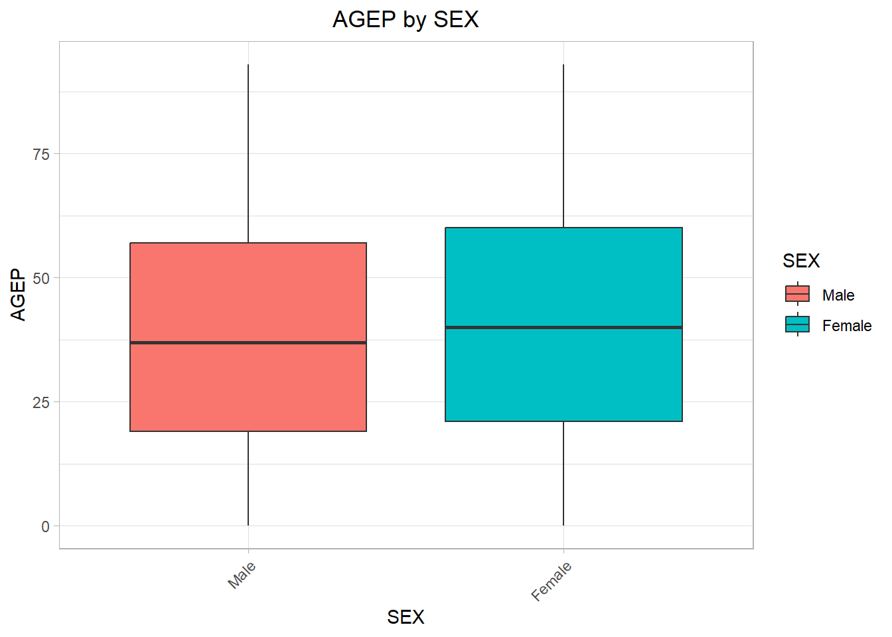
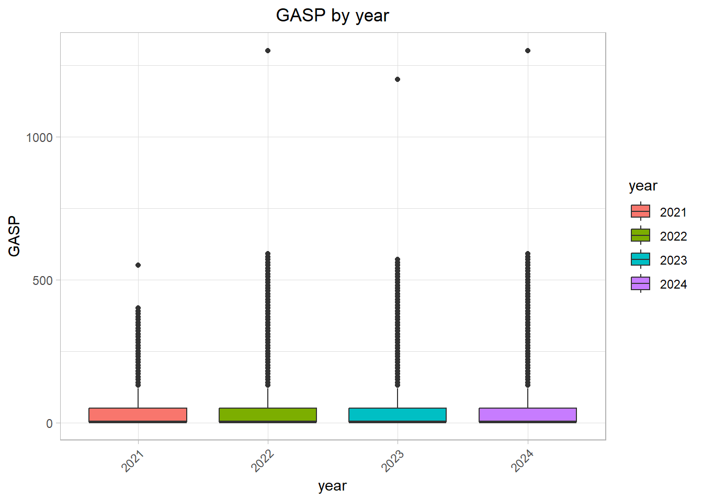

── Attaching core tidyverse packages ──────────────────────── tidyverse 2.0.0 ──
✔ dplyr 1.2.1 ✔ readr 2.2.0
✔ forcats 1.0.1 ✔ stringr 1.6.0
✔ ggplot2 4.0.3 ✔ tibble 3.3.1
✔ lubridate 1.9.5 ✔ tidyr 1.3.2
✔ purrr 1.2.2
── Conflicts ────────────────────────────────────────── tidyverse_conflicts() ──
✖ dplyr::filter() masks stats::filter()
✖ purrr::flatten() masks jsonlite::flatten()
✖ dplyr::lag() masks stats::lag()
ℹ Use the conflicted package (<http://conflicted.r-lib.org/>) to force all conflicts to become errors
library(dplyr)library(lubridate)library(hms)
Attaching package: 'hms'
The following object is masked from 'package:lubridate':
hms
library(quantreg)
Loading required package: SparseM
Introduction
For this project, we will be working with 2021, 2022, 2023, and 2024 data from the Public Use Microdata Sample (PUMS) Census API. First, we obtain an API key from the Census API website.
#save API key into a variable that can easily be used again laterkey <-"6ba7e209537814e77a7b7fc5aa8df5552ef8591b"
Sample API call to show that the key works:
exampleAPI <-GET(paste0("https://api.census.gov/data/2024/acs/acs1/pums?get=SEX,PWGTP,MAR&SCHL=24&key=", key))#view outline of resultsnames(exampleAPI)
A status code of 200 means that the API call was successful.
Part 1: Data Processing
Parsing Variable Values
First, we will practice parsing variable values using 2021 variables.
#Call the API:vars2021 <-GET("https://api.census.gov/data/2021/acs/acs1/pums/variables.json")#Parse the JSON:vars2021 <-fromJSON(rawToChar(vars2021$content))#View example:vars2021$variables$AGEP$values
$item
$item$`00`
[1] "Under 1 year"
$range
min max description
1 1 99 1 to 99 years (Top-coded***)
That worked great for the 2021 data. Now let’s generalize this into a function that can be used for different years:
get_var_values <-function(year){#Validate inputsif (!(year %in%c(2021, 2022, 2023, 2024))){stop("Invalid year: Please enter 2021, 2022, 2023, or 2024") }#API call vars <-GET(paste0("https://api.census.gov/data/", year, "/acs/acs1/pums/variables.json"))#Parse the JSON vars <-fromJSON(rawToChar(vars$content))#Collect variable values into a listif (year %in%c(2021, 2022)){ vars <-list(AGEP = vars$variables$AGEP$values,GASP = vars$variables$GASP$values,GRPIP = vars$variables$GRPIP$values,JWAP = vars$variables$JWAP$values,JWDP = vars$variables$JWDP$values,JWMNP = vars$variables$JWMNP$values,PWGTP = vars$variables$PWGTP$values,FER = vars$variables$FER$values,HHL = vars$variables$HHL$values,SCH = vars$variables$SCH$values,SCHL = vars$variables$SCHL$values,SEX = vars$variables$SEX$values,STATE = vars$variables$ST$values,#NOTE: ST is used instead of STATE in 2021 and 2022REGION = vars$variables$REGION$values,DIVISION = vars$variables$DIVISION$values ) } elseif (year %in%c(2023, 2024)){ vars <-list(AGEP = vars$variables$AGEP$values,GASP = vars$variables$GASP$values,GRPIP = vars$variables$GRPIP$values,JWAP = vars$variables$JWAP$values,JWDP = vars$variables$JWDP$values,JWMNP = vars$variables$JWMNP$values,PWGTP = vars$variables$PWGTP$values,FER = vars$variables$FER$values,HHL = vars$variables$HHL$values,SCH = vars$variables$SCH$values,SCHL = vars$variables$SCHL$values,SEX = vars$variables$SEX$values,STATE = vars$variables$STATE$values,#NOTE: STATE is used instead of ST in 2023 and 2024REGION = vars$variables$REGION$values,DIVISION = vars$variables$DIVISION$values ) }#Return the list of variablesreturn(vars)}
Test to show that the function checks for an invalid year:
get_var_values(2025)
Error in `get_var_values()`:
! Invalid year: Please enter 2021, 2022, 2023, or 2024
Use the function to get the variable values in each of the four years.
That is a pretty good start. We will need to do further cleaning, but let’s generalize the process up to this point into a helper function to take what is returned by GET() and turn it into a tibble that is full of <dbl> values:
Great! Now continue with cleaning. We have a tibble with proper column names, but everything is stored as <dbl>.
Turn categorical variables into factors using variable levels from the .rds file. First, prepare the variable levels. Using SCH as an example:
#read from .rds filerds <-read_rds("data/variables.rds")#narrow down to where the keys and values aresch2024_values <- rds$vars2024$SCH$item#view example:names(sch2024_values)
[1] "0" "3" "1" "2"
#view example:sch2024_values
$`0`
[1] "N/A (less than 3 years old)"
$`3`
[1] "Yes, private school or college or home school"
$`1`
[1] "No, has not attended in the last 3 months"
$`2`
[1] "Yes, public school or public college"
#begin a data.frame to store keys and valuessch2024_clean <-data.frame(rownum =1:length(as.numeric(names(sch2024_values))))#view example:sch2024_clean
rownum
1 1
2 2
3 3
4 4
#loop through keys and values and assign them to the data.framefor (i in1:length(as.numeric(names(sch2024_values)))){#assign key sch2024_clean$num[i] <-as.numeric(names(sch2024_values))[i]#assign value sch2024_clean$value[i] <- sch2024_values[[i]]}#view example:sch2024_clean
rownum num value
1 1 0 N/A (less than 3 years old)
2 2 3 Yes, private school or college or home school
3 3 1 No, has not attended in the last 3 months
4 4 2 Yes, public school or public college
Next, update the tibble to apply the key-value pairs for our factor variable SCH.
# A tibble: 114,270 × 1
SCH
<fct>
1 No, has not attended in the last 3 months
2 Yes, private school or college or home school
3 No, has not attended in the last 3 months
4 No, has not attended in the last 3 months
5 Yes, public school or public college
6 Yes, private school or college or home school
7 Yes, private school or college or home school
8 Yes, public school or public college
9 No, has not attended in the last 3 months
10 No, has not attended in the last 3 months
# ℹ 114,260 more rows
Now SCH is a factor variable!
But, there are many variables that we may need to convert into factor variables.
Generalize this process into a tidy-style function that translates a numeric variable into a factor variable. It will take a tibble as its first parameter, and return a tibble.
convert_to_factor <-function(tibble, year, variable){#validate inputsif (!(is_tibble(tibble))) {stop("First argument is not a tibble.") } elseif (!(year %in%c(2021, 2022, 2023, 2024))){stop("Invalid year: Please enter 2021, 2022, 2023, or 2024") }#read in the .rds file rds <-read_rds("data/variables.rds")#narrow down to where the specific variable's levels are values <- rds[[paste0("vars", year)]] values <- values[[variable]] values <- values$item#initialize a data.frame to hold the levels cleaned <-data.frame(rownum =1:length(as.numeric(names(values))))#loop through keys and levels and assign them to the data.framefor (i in1:length(as.numeric(names(values)))){#assign keys cleaned$num[i] <-as.numeric(names(values))[i]#assign values cleaned$value[i] <- values[[i]] }#update the tibble to format the variable as a factor! tibble[[variable]] <-factor(tibble[[variable]], cleaned$num, cleaned$value)#return the updated tibblereturn(tibble)}
With this function, we should now be able to convert the other variables to factors very easily.
# A tibble: 114,270 × 2
JWAP JWDP
<chr> <chr>
1 7:30 a.m. to 7:34 a.m. 7:30 a.m. to 7:34 a.m.
2 N/A (not a worker; worker who worked from home) N/A (not a worker; worker wh…
3 7:35 a.m. to 7:39 a.m. 7:30 a.m. to 7:34 a.m.
4 N/A (not a worker; worker who worked from home) N/A (not a worker; worker wh…
5 N/A (not a worker; worker who worked from home) N/A (not a worker; worker wh…
6 N/A (not a worker; worker who worked from home) N/A (not a worker; worker wh…
7 N/A (not a worker; worker who worked from home) N/A (not a worker; worker wh…
8 6:10 a.m. to 6:14 a.m. 6:00 a.m. to 6:04 a.m.
9 7:00 a.m. to 7:04 a.m. 7:00 a.m. to 7:04 a.m.
10 N/A (not a worker; worker who worked from home) N/A (not a worker; worker wh…
# ℹ 114,260 more rows
Two examples of values in these columns would be “7:30 a.m. to 7:34 a.m.” and “6:10 a.m. to 6:14 a.m.”. Another example is “N/A (not a worker; worker who worked from home)”, for which we will want to assign an NA value. Store these example values in a vector.
strings <-c("7:30 a.m. to 7:34 a.m.","6:10 a.m. to 6:14 a.m.","N/A (not a worker; worker who worked from home)")#view vectorstrings
[1] "7:30 a.m. to 7:34 a.m."
[2] "6:10 a.m. to 6:14 a.m."
[3] "N/A (not a worker; worker who worked from home)"
Use the word() function to split the strings into a starting time and an ending time.
start <-word(strings, 1, sep =" to ")end <-word(strings, -1, sep =" to ")#view starting times and ending times split apartstart
[1] "7:30 a.m."
[2] "6:10 a.m."
[3] "N/A (not a worker; worker who worked from home)"
end
[1] "7:34 a.m."
[2] "6:14 a.m."
[3] "N/A (not a worker; worker who worked from home)"
Now that the starting time and the ending time are separated, convert each of them from character format to a time format.
# A tibble: 114,270 × 2
JWAP JWDP
<time> <time>
1 07:32 07:32
2 NA NA
3 07:37 07:32
4 NA NA
5 NA NA
6 NA NA
7 NA NA
8 06:12 06:02
9 07:02 07:02
10 NA NA
# ℹ 114,260 more rows
Test to show input validation:
astibble |>time_midpoint("AGEP")
Error in `time_midpoint()`:
! Invalid timecolumn: Please enter "JWAP" or "JWDP"
Now that we have gone through a full example of cleaning a single API call, we can use the helper functions we created to create an overall function which queries the API for a single year and then does all the data cleaning.
query <-function(year =2024,nvar =c("PWGTP", "AGEP"),cvar ="SEX",geolevel ="STATE",geovalue =NULL){#Validate geolevel input and translate into numeric geolevel:if (geolevel =="STATE"){ geolevel_translated <-"040"#set default geovalue for stateif (is.null(geovalue)){ geovalue <-37#North Carolina } } elseif (geolevel =="REGION"){ geolevel_translated <-"020"#set default geovalue for regionif (is.null(geovalue)){ geovalue <-3#South } } elseif (geolevel =="DIVISION"){ geolevel_translated <-"030"#set default geovalue for divisionif (is.null(geovalue)){ geovalue <-5#South Atlantic } } else {stop('Please enter "STATE", "REGION", or "DIVISION" for geolevel.') }#More input validation:if (!(year %in%c(2021, 2022, 2023, 2024))){stop("Invalid year: please enter 2021, 2022, 2023, or 2024") } elseif (!("PWGTP"%in% nvar)){stop('Please include "PWGTP" in list of numeric variables.') } elseif (length(nvar) <2){stop('Please include at least one other numeric varible besides "PWGTP".') } elseif (length(cvar) <1){stop("Please include at least one categorical variable.") }#Validate numeric variables:for (i in nvar){if (!(i %in%c("PWGTP","AGEP","GASP","GRPIP","JWAP","JWDP","JWMNP"))){stop('Invalid numeric variable. Please enter "PWGTP", "AGEP", "GASP", "GRPIP", "JWAP", "JWDP", or "JWMNP".') } }#Validate character variables:for (i in cvar){if (!(i %in%c("FER","HHL","SCH","SCHL","SEX"))){stop('Invalid categorical varibale. Please enter "FER", "HHL", "SCH", "SCHL", or "SEX".') } }#Formulate geolevel and geovalue portion of API call:if (geovalue =="all"){ geo_api <-paste0(",", geolevel)if (year %in%c(2021,2022) & geolevel =="STATE"){ geo_api <-",ST" } } else { geo_api <-paste0("&ucgid=", geolevel_translated,"0000US", geovalue) }#API call: raw_api <-GET(paste0("https://api.census.gov/data/", year,"/acs/acs1/pums?get=",paste(nvar, collapse =","),",",paste(cvar, collapse =","), geo_api,"&key=", key))#Parse and convert into a numeric tibble using helper function: tibble <-parse_from_get(raw_api)#For 2021 and 2022: rename ST variable to STATE:if (year %in%c(2021, 2022) & geolevel =="STATE"){ tibble <- tibble |>rename("STATE"="ST") }#Convert character variables and geolevel to factors using helper function:for (i inc(cvar, geolevel)){ tibble <- tibble |>convert_to_factor(year, i) }#Convert time variables using helper functions:if ("JWAP"%in% nvar){ tibble <- tibble |>convert_to_factor(year, "JWAP") |>time_midpoint("JWAP") }if ("JWDP"%in% nvar){ tibble <- tibble |>convert_to_factor(year, "JWDP") |>time_midpoint("JWDP") }#Add census class:class(tibble) <-c("census", class(tibble))return(tibble)}
# A tibble: 114,270 × 4
PWGTP AGEP SEX STATE
<dbl> <dbl> <fct> <fct>
1 60 23 Male North Carolina/NC
2 49 21 Male North Carolina/NC
3 24 20 Male North Carolina/NC
4 54 79 Female North Carolina/NC
5 79 18 Male North Carolina/NC
6 54 19 Female North Carolina/NC
7 58 22 Female North Carolina/NC
8 17 18 Female North Carolina/NC
9 30 22 Male North Carolina/NC
10 37 67 Female North Carolina/NC
# ℹ 114,260 more rows
# A tibble: 200,067 × 5
PWGTP JWAP JWDP SCH STATE
<dbl> <time> <time> <fct> <fct>
1 25 NA NA No, has not attended in the last 3 months New York…
2 10 NA NA No, has not attended in the last 3 months New York…
3 72 NA NA Yes, private school or college or home school New York…
4 65 NA NA No, has not attended in the last 3 months New York…
5 6 NA NA No, has not attended in the last 3 months New York…
6 109 NA NA No, has not attended in the last 3 months New York…
7 6 NA NA Yes, public school or public college New York…
8 60 11:57 11:44:30 Yes, public school or public college New York…
9 29 10:12 10:04:30 Yes, private school or college or home school New York…
10 69 NA NA Yes, private school or college or home school New York…
# ℹ 200,057 more rows
example4 <-query(2024)#view resultsexample4
# A tibble: 114,270 × 4
PWGTP AGEP SEX STATE
<dbl> <dbl> <fct> <fct>
1 60 23 Male North Carolina/NC
2 49 21 Male North Carolina/NC
3 24 20 Male North Carolina/NC
4 54 79 Female North Carolina/NC
5 79 18 Male North Carolina/NC
6 54 19 Female North Carolina/NC
7 58 22 Female North Carolina/NC
8 17 18 Female North Carolina/NC
9 30 22 Male North Carolina/NC
10 37 67 Female North Carolina/NC
# ℹ 114,260 more rows
# A tibble: 3,373,378 × 4
PWGTP AGEP SEX DIVISION
<dbl> <dbl> <fct> <fct>
1 3 17 Female West North Central (Midwest region)
2 42 73 Male South Atlantic (South region)
3 11 22 Male East North Central (Midwest region)
4 32 82 Female East North Central (Midwest region)
5 31 19 Female Middle Atlantic (Northeast region)
6 32 88 Male South Atlantic (South region)
7 45 80 Male South Atlantic (South region)
8 37 33 Male Mountain (West region)
9 29 44 Male Mountain (West region)
10 55 36 Male West South Central (South Region)
# ℹ 3,373,368 more rows
Tests to show input validation:
#Examples showing invalid inputs:query(2025)
Error in `query()`:
! Invalid year: please enter 2021, 2022, 2023, or 2024
query(2024, c("JWAP"))
Error in `query()`:
! Please include "PWGTP" in list of numeric variables.
query(2024, c("PWGTP", "JWAP"), c())
Error in `query()`:
! Please include at least one categorical variable.
query(2023, c("PWGTP", "JWAP"), "SCH", "AREA")
Error in `query()`:
! Please enter "STATE", "REGION", or "DIVISION" for geolevel.
Combining Years
Write a function that calls the single-year function as many times as needed and then combines the data into one final tibble with a year variable.
multiyear_query <-function(years, nvar, cvar, geolevel, geovalue){#initialize a flag to keep track of if it is the first year firstyear <-1for (year in years){if(firstyear==1){#for the first year: run the single-year query and assign the year variable tibble <-query(year, nvar, cvar, geolevel, geovalue) |>mutate(year =as.character(year))#note: formatting year as character for categorical analysis#change the firstyearflag for the next iteration of the for loop firstyear <-0 } else {#for every year after the first year, append new rows to the working tibble tibble <- dplyr::bind_rows(tibble,query(year, nvar, cvar, geolevel, geovalue) |>mutate(year =as.character(year))) } }#after all years have been processed, return the final tibblereturn(tibble)}
# A tibble: 439,757 × 14
PWGTP AGEP GASP GRPIP JWAP JWDP JWMNP FER HHL SCH SCHL SEX STATE
<dbl> <dbl> <dbl> <dbl> <tim> <tim> <dbl> <fct> <fct> <fct> <fct> <fct> <fct>
1 78 21 3 0 09:17 09:12 5 N/A … N/A … No, … 1 or… Male Nort…
2 9 58 3 0 NA NA 0 N/A … N/A … No, … Regu… Fema… Nort…
3 32 20 3 0 NA NA 0 No N/A … Yes,… 1 or… Fema… Nort…
4 6 40 3 0 NA NA 0 No N/A … No, … 12th… Fema… Nort…
5 119 21 3 0 07:37 07:32 5 N/A … N/A … Yes,… 1 or… Male Nort…
6 65 20 3 0 NA NA 0 N/A … N/A … Yes,… 1 or… Male Nort…
7 11 41 3 0 NA NA 0 N/A … N/A … No, … 1 or… Male Nort…
8 67 18 3 0 NA NA 0 No N/A … Yes,… Regu… Fema… Nort…
9 19 19 3 0 NA NA 0 N/A … N/A … Yes,… 1 or… Male Nort…
10 100 19 3 0 NA NA 0 N/A … N/A … Yes,… 1 or… Male Nort…
# ℹ 439,747 more rows
# ℹ 1 more variable: year <chr>
Part 2: Writing a Generic Function for Summarizing
Numeric Summaries
Write a function that produces means and standard deviations for our numeric variable(s) (ignore the time variables) and counts for our categorical variable(s) (year should be treated as categorical).
summary.census <-function(tibble,nvar =NULL,cvar =NULL){#set defaults if variables are not specifiedif (is.null(nvar)){#default is all numeric variables except for PWGTP and the time variables nvar <-attributes(tibble)$names nvar <- nvar[nvar %in%c("AGEP","GASP","GRPIP","JWMNP")] }if (is.null(cvar)){ #default is all categorical variables cvar <-attributes(tibble)$names cvar <- cvar[cvar %in%c("FER","HHL","SCH","SCHL","SEX","STATE","REGION","DIVISION","year")] }#initialize empty lists for the results numeric_results <-list() categorical_results <-list()#summarize numeric variablesfor (x in nvar){ sample_mean <-sum(tibble[[x]]*tibble$PWGTP) /sum(tibble$PWGTP) sample_sd <-sqrt(sum(tibble[[x]]^2*tibble$PWGTP) /sum(tibble$PWGTP)-sample_mean^2) numeric_results[[x]] <-c(sample_mean = sample_mean,sample_sd = sample_sd) }#summarize categorical variablesfor (x in cvar){ categorical_results[[x]] <- tibble[,c("PWGTP", x)] |>group_by(across(-PWGTP)) |>summarize(count =sum(PWGTP)) } results <-list(numeric = numeric_results,categorical = categorical_results)return(results)}
$numeric
$numeric$AGEP
sample_mean sample_sd
39.67205 23.20707
$numeric$GASP
sample_mean sample_sd
46.06164 111.93232
$categorical
$categorical$SEX
# A tibble: 2 × 2
SEX count
<fct> <dbl>
1 Male 21081988
2 Female 22049662
$categorical$SCH
# A tibble: 4 × 2
SCH count
<fct> <dbl>
1 N/A (less than 3 years old) 1383353
2 Yes, private school or college or home school 1806273
3 No, has not attended in the last 3 months 31624289
4 Yes, public school or public college 8317735
$categorical$year
# A tibble: 4 × 2
year count
<chr> <dbl>
1 2021 10551162
2 2022 10698973
3 2023 10835491
4 2024 11046024
summary(example8)
$numeric
$numeric$AGEP
sample_mean sample_sd
39.67205 23.20707
$numeric$GASP
sample_mean sample_sd
46.06164 111.93232
$numeric$GRPIP
sample_mean sample_sd
9.84008 21.16603
$numeric$JWMNP
sample_mean sample_sd
10.03340 18.15596
$categorical
$categorical$FER
# A tibble: 3 × 2
FER count
<fct> <dbl>
1 N/A (less than 15 years/greater than 50 years/ male) 32944143
2 No 9669465
3 Yes 518042
$categorical$HHL
# A tibble: 6 × 2
HHL count
<fct> <dbl>
1 N/A (GQ/vacant) 1109750
2 Spanish 4561235
3 Other Indo-European languages 1314237
4 English Only 34593191
5 Asian and Pacific Island languages 1080054
6 Other Language 473183
$categorical$SCH
# A tibble: 4 × 2
SCH count
<fct> <dbl>
1 N/A (less than 3 years old) 1383353
2 Yes, private school or college or home school 1806273
3 No, has not attended in the last 3 months 31624289
4 Yes, public school or public college 8317735
$categorical$SCHL
# A tibble: 25 × 2
SCHL count
<fct> <dbl>
1 Regular high school diploma 7561590
2 No schooling completed 1407630
3 Grade 1 506482
4 Kindergarten 529092
5 Grade 4 564748
6 Professional degree beyond a bachelor's degree 604210
7 1 or more years of college credit, no degree 4817260
8 Master's degree 3049810
9 Grade 7 643558
10 Associate's degree 3272860
# ℹ 15 more rows
$categorical$SEX
# A tibble: 2 × 2
SEX count
<fct> <dbl>
1 Male 21081988
2 Female 22049662
$categorical$STATE
# A tibble: 1 × 2
STATE count
<fct> <dbl>
1 North Carolina/NC 43131650
$categorical$year
# A tibble: 4 × 2
year count
<chr> <dbl>
1 2021 10551162
2 2022 10698973
3 2023 10835491
4 2024 11046024
Graphical Summaries
Create a generic plot() function for a census class tibble which creates a boxplot of a numeric variable at the levels of the categorical variable.
plot.census <-function(tibble, num_var, cat_var){#initialize the plotggplot(tibble) +#add boxplot layergeom_boxplot(aes(x =get(cat_var),y =get(num_var),fill =get(cat_var),weight = PWGTP)) +#set x and y labels and titlelabs(title =paste(num_var, cat_var, sep =" by "),x = cat_var,y = num_var) +#set legend labelscale_fill_discrete(cat_var) +#set the color themetheme_light() +#center the titletheme(plot.title =element_text(hjust =0.5)) +#angle the x-axis labelstheme(axis.text.x =element_text(angle =45, hjust =1))}
Examples:
plot(example8, "AGEP", "SEX")

plot(example8, "GASP", "year")

Investigation
Investigate something interesting from the data using the functions above!
For this investigation, we will look at the numeric variable GPIP, which represents “Gross rent as a percentage of household income past 12 months”.
# A tibble: 439,757 × 6
PWGTP GRPIP SEX SCHL STATE year
<dbl> <dbl> <fct> <fct> <fct> <chr>
1 78 0 Male 1 or more years of college credit, no degree North … 2021
2 9 0 Female Regular high school diploma North … 2021
3 32 0 Female 1 or more years of college credit, no degree North … 2021
4 6 0 Female 12th grade - no diploma North … 2021
5 119 0 Male 1 or more years of college credit, no degree North … 2021
6 65 0 Male 1 or more years of college credit, no degree North … 2021
7 11 0 Male 1 or more years of college credit, no degree North … 2021
8 67 0 Female Regular high school diploma North … 2021
9 19 0 Male 1 or more years of college credit, no degree North … 2021
10 100 0 Male 1 or more years of college credit, no degree North … 2021
# ℹ 439,747 more rows
Look at a summary of the data.
summary(rent_data)
$numeric
$numeric$GRPIP
sample_mean sample_sd
9.84008 21.16603
$categorical
$categorical$SEX
# A tibble: 2 × 2
SEX count
<fct> <dbl>
1 Male 21081988
2 Female 22049662
$categorical$SCHL
# A tibble: 25 × 2
SCHL count
<fct> <dbl>
1 Regular high school diploma 7561590
2 No schooling completed 1407630
3 Grade 1 506482
4 Kindergarten 529092
5 Grade 4 564748
6 Professional degree beyond a bachelor's degree 604210
7 1 or more years of college credit, no degree 4817260
8 Master's degree 3049810
9 Grade 7 643558
10 Associate's degree 3272860
# ℹ 15 more rows
$categorical$STATE
# A tibble: 1 × 2
STATE count
<fct> <dbl>
1 North Carolina/NC 43131650
$categorical$year
# A tibble: 4 × 2
year count
<chr> <dbl>
1 2021 10551162
2 2022 10698973
3 2023 10835491
4 2024 11046024
#Summarize year specifically:summary(rent_data, cvar ="year")